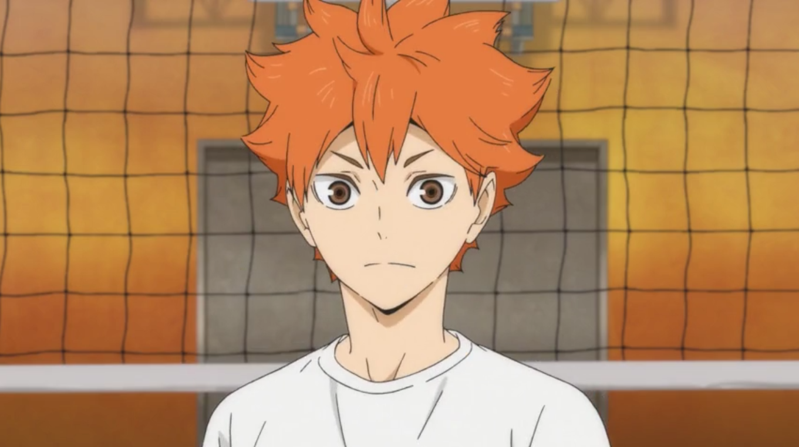

Seja bem-vindo ao portfólio Haikyuu!
Mas, primeiramente: O que é "Haikyuu"?
Haikyuu é uma série de mangás escrito por Haruichi Furudate. A obra conta a vida do protagonista, Shōyō Hinata, que é apaixonado por vôlei. Acompanhamos a história do protagonista, desde o colegial até sua vida adulta, mostrando o caminho percorrido pelo mesmo no esporte. Há uma adaptação para em anime, ainda em lançamento.
